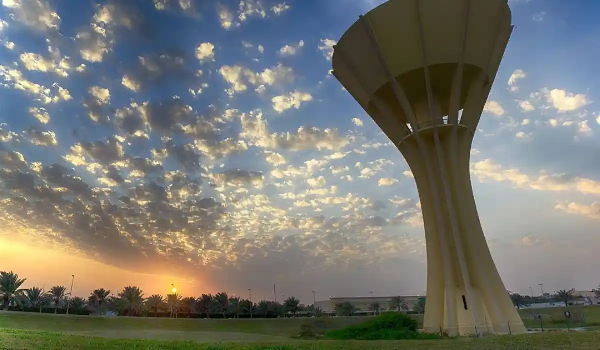

محامي ومكتب محاماة في القطيف لجميع القضايا. استشارة قانونية سريعة.

فريقنا يخدم كل مناطق وأحياء القطيف دون استثناء، بنفس سرعة الاستجابة ومعيار الخدمة.
يقدّم فريقنا في القطيف استشارة وتمثيلاً قانونيًا لعملاء الأفراد والشركات في واحة زراعية وتجارية عريقة بالمنطقة الشرقية، بحساسية خاصة للطابع الاجتماعي والعائلي المميز للمنطقة.
القطيف من أعرق مناطق المنطقة الشرقية تاريخيًا، وتتميز بطابعها الزراعي والتجاري الممتد عبر أجيال، إلى جانب نشاط ملحوظ في قطاع الصيد البحري نظرًا لموقعها الساحلي. هذا المزيج بين الطابع الزراعي التقليدي والنشاط التجاري الحديث يخلق تنوعًا في طبيعة القضايا، من نزاعات الأراضي الزراعية الموروثة إلى القضايا التجارية للمحال والمشاريع الصغيرة والمتوسطة المنتشرة في المنطقة. كما تضم القطيف عددًا من القرى والبلدات ذات الطابع السكني المتماسك، وهو ما يجعل كثيرًا من قضاياها ذات بعد اجتماعي يتجاوز الجانب القانوني البحت.
يحتل قضايا المواريث والتركات صدارة الطلب في القطيف، نظرًا لطبيعة الملكية العائلية الممتدة للأراضي الزراعية عبر أجيال متعددة. كما نتابع عددًا من قضايا قانون العقارات والملكية المرتبطة بتقسيم الأراضي الزراعية والسكنية، إلى جانب تأسيس الشركات للمشاريع التجارية الصغيرة والمتوسطة المنتشرة في أسواق المنطقة. تشمل هذه المشاريع محال بيع التمور والمنتجات الزراعية المحلية، وهي أنشطة تجارية متجذرة في اقتصاد المنطقة منذ عقود طويلة.
نظرًا للطابع الساحلي للمنطقة، نساعد أيضًا في ملفات مرتبطة بقطاع الزراعة وقطاع التجارة والشحن والملاحة المرتبط بالصيد البحري، إضافة إلى قضايا الطلاق والخلع والحضانة والنفقة في المحاكم العامة بالمنطقة.
تخضع قضايا القطيف للمحكمة العامة للأحوال الشخصية والقضايا المدنية، والمحكمة التجارية للنزاعات التجارية والعقارية، مع متابعة إلكترونية شاملة عبر منصة ناجز. وفي قضايا الأراضي الزراعية الموروثة تحديدًا، نساعد العملاء على فهم المسار الصحيح للتوثيق قبل أي إجراء قضائي.
من الحالات المتكررة: نزاع بين ورثة حول تقسيم أرض زراعية موروثة عبر عدة أجيال، أو صاحب مشروع تجاري صغير يحتاج لتأسيس شركة رسمية لتوسيع نشاطه، أو صياد يواجه نزاعًا حول عقد استئجار قارب أو معدات صيد. نراعي في كل حالة الطابع الاجتماعي والعائلي الخاص لسكان المنطقة عند تقديم الاستشارة.
حالة أخرى متكررة: عائلة تمتلك أرضًا زراعية منتجة للتمور منذ عقود، وتحتاج لتحويل جزء منها لاستخدام تجاري أو سكني دون التأثير على حصص باقي الورثة في الجزء الزراعي المتبقي. نساعد العائلة على فهم الخيارات النظامية المتاحة لتقسيم الاستخدام دون الحاجة لبيع الأرض بالكامل أو الدخول في نزاع طويل بين الأطراف. كما نتابع حالات صيادين يشتركون في ملكية قارب واحد ويحتاجون لعقد شراكة واضح يحدد نسب الأرباح والمسؤوليات بينهم لتفادي أي خلاف مستقبلي.
في قضايا المواريث التي يتفق فيها الورثة على المبدأ، غالبًا ما تكفي استشارة لصياغة اتفاق قسمة ودّي موثّق. أما في حال وجود خلاف جوهري بين الورثة حول أرض زراعية ذات قيمة كبيرة، فإننا ننتقل إلى التمثيل الكامل أمام المحكمة العامة لضمان قسمة نظامية عادلة. حتى في حالات الخلاف الجوهري، نحاول دائمًا استكشاف إمكانية الوصول لتفاهم جزئي بين الأطراف قبل اللجوء الكامل للقضاء، لأن ذلك عادة أسرع وأقل تكلفة على الجميع، ويحافظ على العلاقة بين أفراد الأسرة الواحدة بشكل أفضل بكثير من التقاضي الكامل الذي قد يمتد لسنوات ويؤثر سلبًا على تماسك العائلة لأجيال قادمة، وهذا اعتبار نضعه دائمًا في صميم نصيحتنا القانونية لكل عائلة نتعامل معها في القطيف، بصرف النظر عن حجم الأرض أو عدد الورثة المعنيين بها فعليًا في كل حالة على حدة نتعامل معها دائمًا بجدية كاملة واحترافية تامة لا تتغير.
علامات تستدعي التواصل الفوري: خلاف بين الورثة حول أرض لم تُقسّم بعد، الرغبة في تأسيس شركة رسمية لمشروع تجاري قائم، أو نزاع حول عقد استئجار متعلق بالصيد البحري. معالجة هذه المواقف مبكرًا يحفظ حقوق جميع الأطراف ويقلل فرص النزاع الممتد. ننصح أيضًا بالتواصل معنا قبل أي اجتماع عائلي كبير لمناقشة تقسيم تركة، حتى تكون مستعدًا بمعلومات قانونية دقيقة تساعد على إدارة النقاش بشكل بنّاء بدل الدخول في خلاف عاطفي غير ضروري.
يبدأ التواصل عبر الواتساب بوصف موجز لموقفك، يليه تقييم من محامٍ متخصص، ثم خطة عمل واضحة المدة. نراعي دائمًا الطابع العائلي الحساس لكثير من قضايا المنطقة، ونحرص على التعامل بهدوء ووضوح مع جميع الأطراف المعنية. وفي حال كانت القضية تخص عددًا كبيرًا من أفراد العائلة، نحرص على تنظيم التواصل بطريقة تضمن وصول المعلومة نفسها للجميع دون التباس.
في قضايا المواريث، يفيد وجود صك حصر الورثة إن كان صادرًا، أو بيانات أساسية عن الأرض الزراعية والورثة إن لم يكن الصك جاهزًا. في قضايا تأسيس الشركات، يكفي وصف طبيعة النشاط التجاري المطلوب. نطلب المستندات الرسمية فقط عند الانتقال لمرحلة التمثيل الفعلي. في نزاعات الصيد البحري، يساعد وجود نسخة من عقد استئجار القارب أو المعدات محل النزاع.
يعمل فريقنا في القطيف بتنسيق مع فرق الدمام والجبيل القريبتين، نظرًا لأن كثيرًا من سكان القطيف يعملون في منشآت صناعية أو تجارية بهاتين المدينتين. نضمن متابعة موحّدة لملفك بصرف النظر عن مكان عملك، حتى لو تطلب الأمر التنسيق بين أكثر من فريق محلي في آنٍ واحد.
سؤال متكرر: هل يمكن تقسيم أرض زراعية كبيرة عمليًا بين عدد كبير من الورثة دون التأثير على قيمتها الإنتاجية؟ نساعد في تقييم ذلك بالتنسيق مع خبراء مساحة عند الحاجة قبل أي قسمة رسمية. سؤال آخر: هل يلزم بيع الأرض لتوزيع قيمتها بدل تقسيمها عينيًا؟ ليس دائمًا؛ نوضح لك الخيارات المتاحة حسب طبيعة الأرض وعدد الورثة تحديدًا. سؤال ثالث شائع: هل يمكن لأحد الورثة المقيمين خارج المنطقة المشاركة في اتخاذ القرار عن بُعد؟ نعم، ونساعد في تنسيق ذلك عبر الواتساب والتوكيلات الرسمية عند الحاجة.
نتعامل مع قضايا القطيف بحساسية خاصة تراعي الطابع الاجتماعي والعائلي الممتد للمنطقة، خصوصًا في قضايا المواريث والأراضي الزراعية، مع الحفاظ على نفس معايير السرعة والوضوح المعتمدة في شبكتنا الوطنية. نؤمن بأن كل عائلة في القطيف تستحق تعاملاً يراعي خصوصيتها، لا حلولاً جاهزة منسوخة من ملف إلى آخر دون مراعاة تفاصيل كل حالة، وهذا بالضبط ما يميز أسلوب عملنا في هذه المنطقة تحديدًا عن غيرها من مدن الشبكة.
ندرك أن كثيرًا من قضايا القطيف تمس أراضٍ وعلاقات عائلية ممتدة عبر أجيال، وأن أي خطأ في التعامل قد يؤثر على علاقات الأسرة بأكملها لا على طرف واحد فقط. نلتزم بالتعامل مع كل ملف بحياد تام تجاه جميع الأطراف، وتفضيل الحلول التي تحافظ على تماسك العائلة كلما كان ذلك ممكنًا، دون التفريط في حقوق أي طرف معني. نؤمن بأن دورنا لا يقتصر على تطبيق النظام حرفيًا، بل يمتد لمساعدة العائلات على الوصول لحلول عادلة تحافظ على العلاقات الإنسانية بينها قدر الإمكان.
يغطي فريقنا في القطيف جميع الأحياء والمناطق دون استثناء، بما في ذلك القديح، العوامية، والمنطقة المركزية، بنفس سرعة الاستجابة ومعيار الخدمة بصرف النظر عن موقعك داخل المدينة.
نعم، نتابع بانتظام قضايا مواريث وتقسيم أراضٍ زراعية موروثة عبر عدة أجيال في مختلف قرى ومدن القطيف.
نعم، نساعد في صياغة اتفاقيات شراكة واضحة تحدد نسب الملكية والأرباح والمسؤوليات بين الشركاء في قارب أو معدات صيد مشتركة، لتفادي أي خلاف مستقبلي بينهم.
نعم، نساعد أصحاب المحال والمشاريع الصغيرة والمتوسطة في تأسيس شركات رسمية تتيح لهم توسيع نشاطهم التجاري.
نعم، نساعد في قضايا متعلقة بعقود استئجار القوارب والمعدات، ونزاعات الشراكة في مشاريع الصيد الساحلي.
نعم، نفضّل دائمًا هذا المسار متى كان الورثة متفقين على المبدأ، ونساعد في توثيق الاتفاق رسميًا.
الاستشارة الأولية مجانية دائمًا؛ تكلفة التمثيل الكامل تُحدَّد بشفافية بعد فهم تفاصيل الأرض وعدد الورثة.
نعم، بل ننصح بذلك تحديدًا في الأراضي الزراعية الكبيرة، لتوثيق حقوق الجميع قبل أن يتحول أي خلاف بسيط إلى نزاع طويل.
تواصل مع محامٍ مرخّص خلال دقائق عبر الواتساب — في أي مدينة بالمملكة.
ابدأ الاستشارة الآن